Tonlé Sap Lake is the largest freshwater lake in Southeast Asia and hosts one of the world’s most vibrant ecosystems, with massive numbers of many different species of wildlife which helped to sustain and grow the ancient Khmer civilisation. It is also well known for its local communities and their floating villages.
The massive lake is as much as 250 km in length and 100 km across at its widest point, making it seem like an inland ocean because it is impossible to see the opposite shore from ground level. Surprisingly it is actually fairly shallow, with a maximum depth of only 10 metres.
While the lake was a spectacular sight, we were slightly troubled by the power cable health and safety arrangements on our boat ...
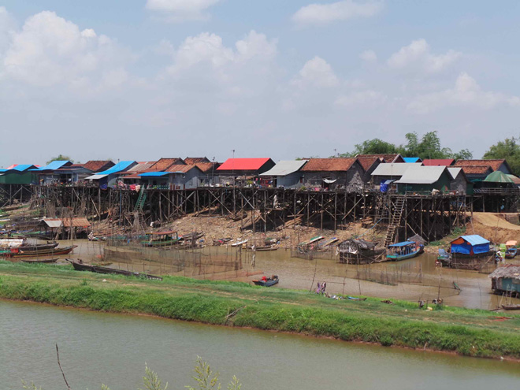
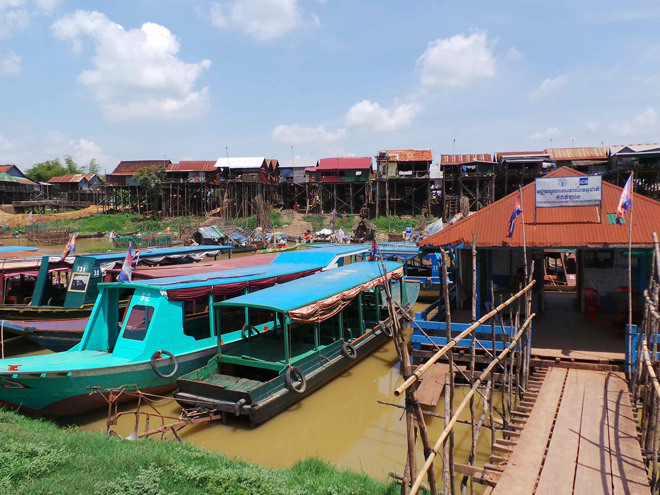
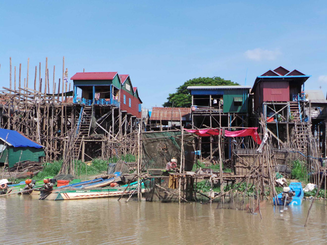
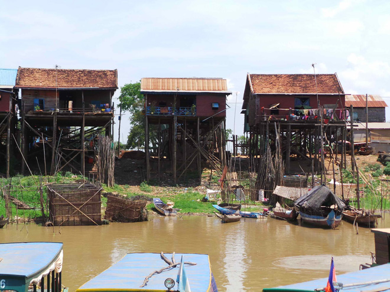
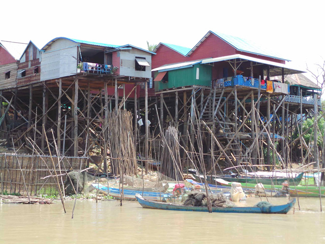
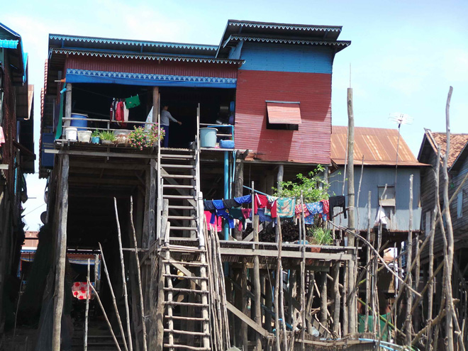
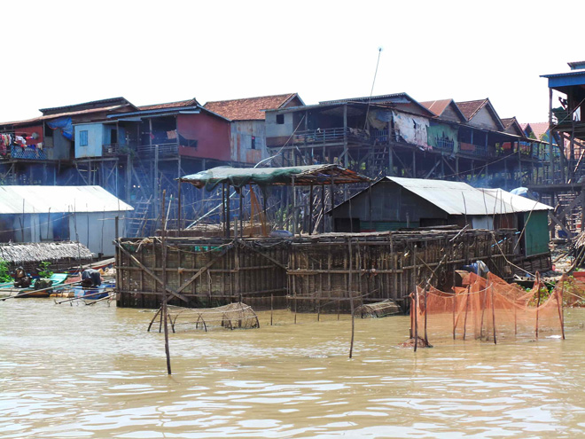
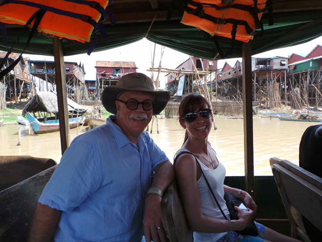
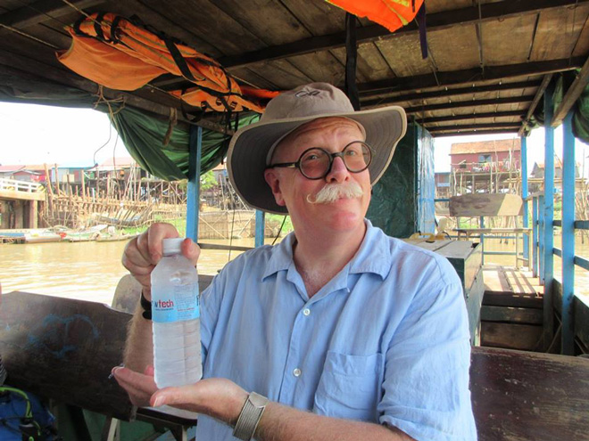
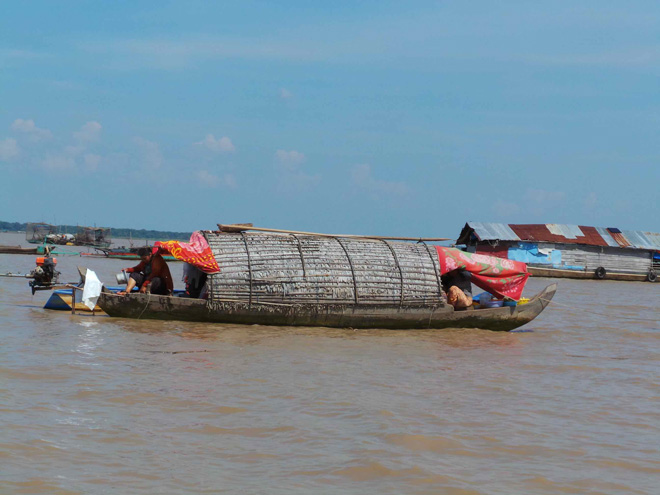
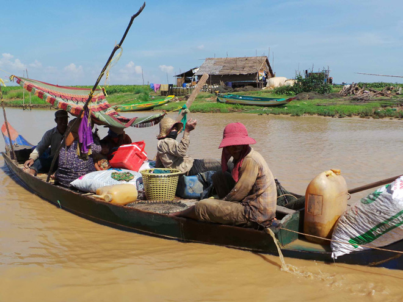
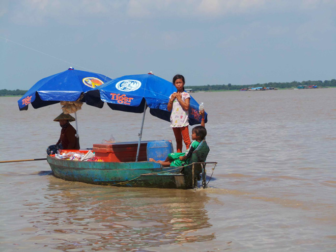
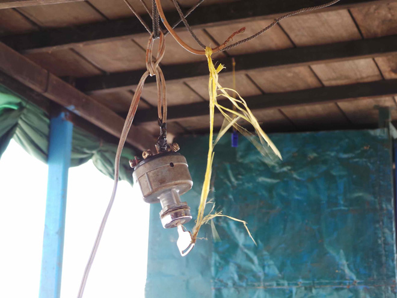
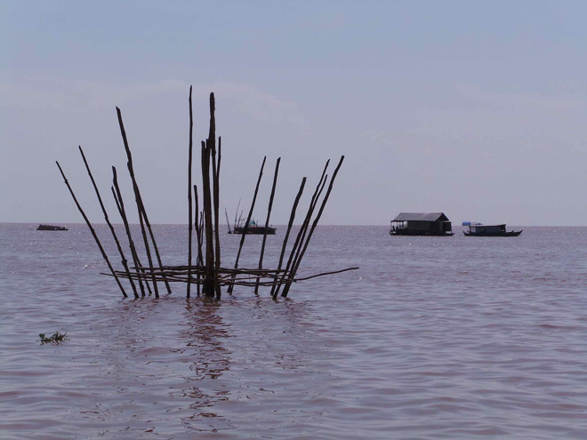
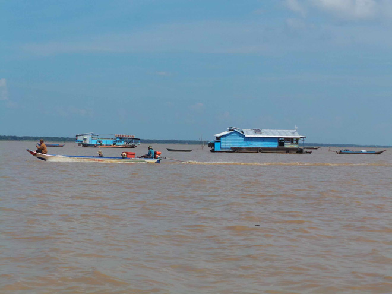
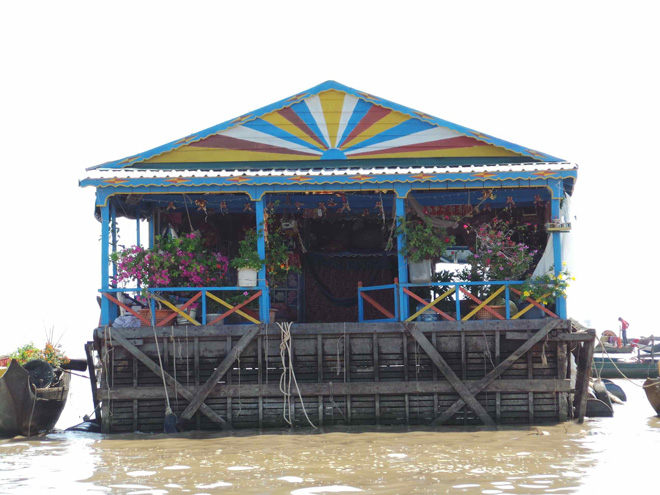
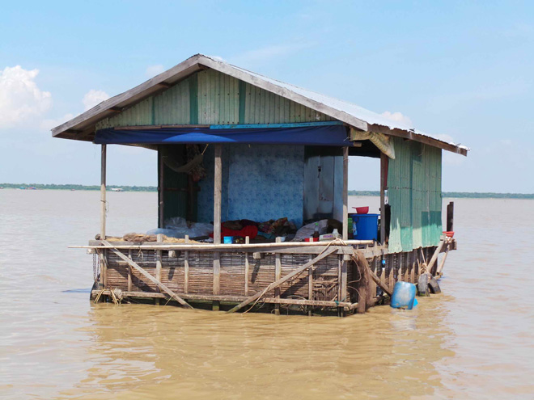
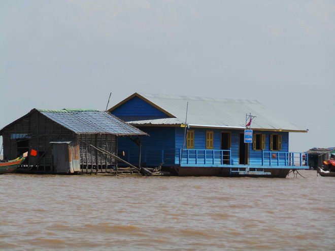
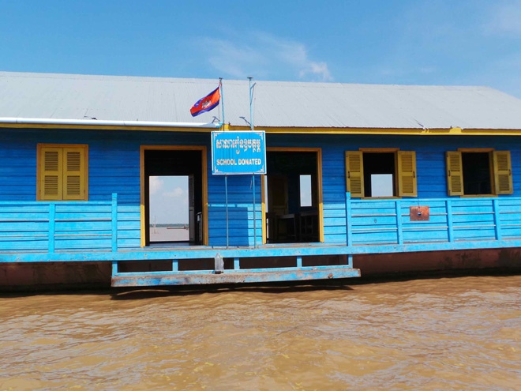
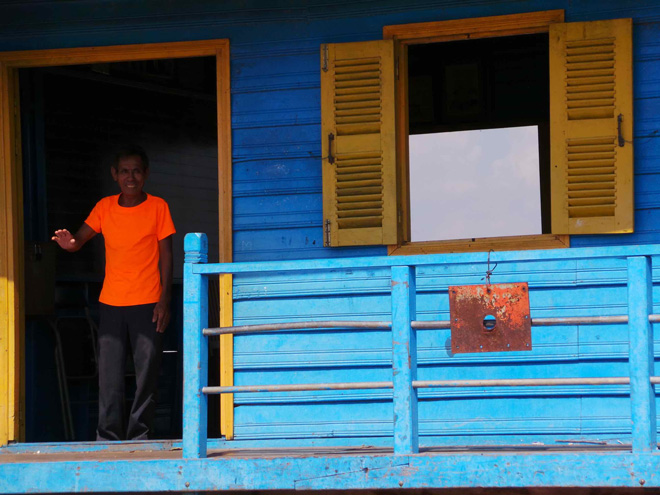